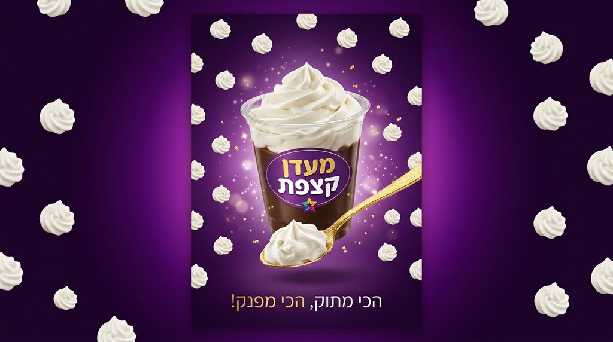
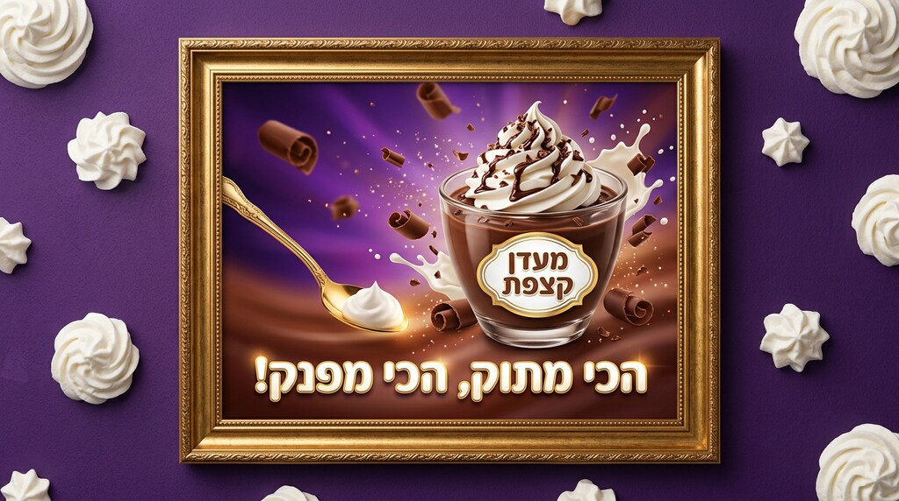
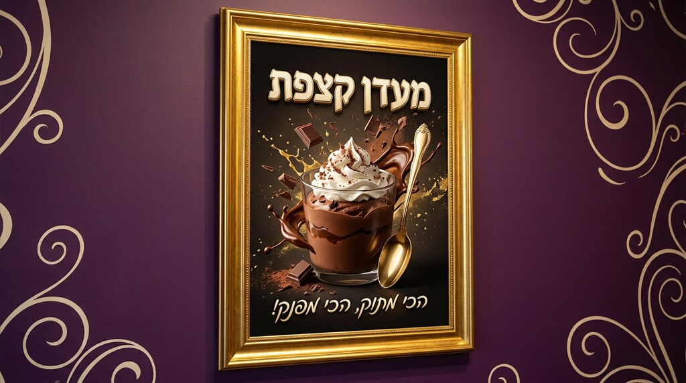
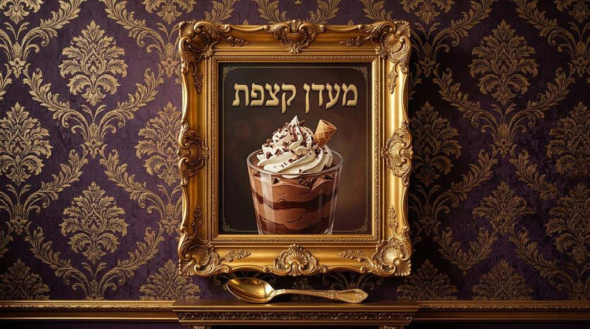

לקחנו פרסומת של מילקי ונתנו למכונה לתאר אותה, לצייר אותה מחדש, ושוב לתאר ולצייר. המודל לא מתקדם בקו ישר: בכל סבב הוא מנחש מחדש. רצינו לראות מה נשאר מהמעדן הכי ישראלי שיש אחרי כמה סבבים.
ארבע שרשראות, כולן מתחילות מאותה פרסומת. כל סבב מקבל את התמונה של הסבב הקודם. לא בחרנו ולא הרצנו שוב.
xhairymutantx
הולי הרנדון ומט דרייהרסט, 2024. הוזמנה לביאנלה של ויטני.
Holly Herndon & Mat Dryhurst, xhairymutantx, 2024. Courtesy Whitney Museum of American Art.
חלק א׳. שלוש שאלות
איזה ארכיון העבודה משתמשת בו, ומה חסר בו? הם אימנו מודל על תמונות של הולי הרנדון עצמה, בתחפושת ועם שיער אדום מוגזם. דאטה של אדם אחד, שבחר בעצמו מה נכנס. מה שחסר זה כל מי שאין לו מוזיאון. ויטני מעלה את התמונות לאתר שמודלים סומכים עליו, אז הולי יכולה לקבוע איך יזכרו אותה. לרוב האנשים אין ויטני.
מה המרחב הלטנטי חושף בעבודה, ומה הוא מעלים? הוא חושף ששם של אדם בתוך מודל הוא רשימת תכונות: ג׳ינג׳ית, פוני, עיניים כחולות. מגזימים בהן, וההגזמה הופכת להולי הבאה. מה שמוסתר זה אם זה עבד. אף אחד לא בדק אם המודלים הבאים למדו את ההולי השעירה.
איזו אסטרטגיה: גליץ׳, הסתרה או סירוב? גליץ׳, בכוונה. במקום לצאת מהדאטה הם נכנסים אליו ומשבשים אותו מבפנים. סומאיני מצטט אותם: “all media is training data” (עמ׳ 60). אם הכול יהפוך לדאטה בכל מקרה, לפחות שהם יבחרו איזה.
חלק ב׳. טלפון שבור, על מילקי
המהלך: להחליף ארכיון. הם עבדו על הולי. אנחנו לקחנו פרסומת של מילקי והעברנו אותה ממכונה למכונה, בארבע דרכים.
הכלים: Claude (Opus 5.5) מתאר. Nano Banana 2.1, דרך Magnific, מצייר. בשרשרת ד׳ מציירים גם Z-Image, Classic Fast ו-Ideogram.
פרסומת מילקי, שטראוס
שרשרת א׳תיאור מלא
תיאור מלא, 9 סבבים. בסבב הראשון המודל כתב ׳מילקי׳ בעצמו. בסבב השני כבר היה ׳מעדן קצפת׳. בסבב התשיעי, גלידה עם בראוניז.
המקור0
סבב1
המודל כתב ׳מילקי׳ בעצמו, עם לוגו כמעט זהה. בתיאור היה כתוב רק ״אותיות בעברית״.
A glossy advertising image on a deep purple background with a soft lighter purple glow in the center. In the middle floats a clear plastic dessert cup: chocolate pudding in the bottom half, a thick layer of white whipped cream on top, a small swirl of cream peaking above the rim. On the cup, a large purple oval label tilted slightly, with bold yellow-and-white rounded letters in Hebrew and a small colorful star-burst emblem above them. A shiny gold spoon crosses in front of the cup diagonally, holding a dollop of whipped cream. Around it, dozens of small white whipped-cream swirls are scattered across the purple background like a pattern.
סבב2
בסבב השני ׳מילקי׳ כבר לא היה שם. היה ׳מעדן קצפת׳.
A glossy dessert advertisement on a rich purple background with a glowing violet light and tiny sparkles behind the center. A clear plastic cup with dark chocolate pudding at the bottom and a thick white whipped-cream layer on top, a cream swirl rising above the rim. On the front, a large rounded purple label with big yellow Hebrew letters outlined in white, and a small colorful flower-like emblem with tiny Hebrew text above them. A shiny gold spoon in front of the cup, its bowl full of whipped cream. Many white whipped-cream rosettes float all around, some sharp, some blurred in the foreground corners.
סבב3
A glossy dessert advertisement on a deep purple background with a bright violet starburst glow and sparkles behind the center. A clear plastic cup of dark chocolate pudding topped with a tall, pointed swirl of white whipped cream overflowing the rim. On the cup, a round purple sticker with large yellow Hebrew text in two lines: "מעדן קצפת", and above it a small round multicolored flower badge with the tiny Hebrew words "טעים במיוחד". A gold spoon lies in front at the bottom right with a dollop of whipped cream. Big white meringue-like cream rosettes float everywhere, the ones near the edges blurred.
סבב4
A dessert advertisement on a purple background with a strong violet starburst of light rays and glittering sparkles behind the product. A clear cup of chocolate pudding crowned with a very tall, pointed swirl of white whipped cream. On the cup, a round purple label with big yellow Hebrew letters in two lines, "מעדן קצפת", and a small rainbow-petal flower badge above with tiny Hebrew text. A gold spoon with a small dollop of cream lies diagonally at the bottom right. Large white cream swirls float around the frame, the closest ones big and out of focus.
סבב5
A dramatic dessert advertisement on a dark purple background with an intense violet burst of light rays and glowing bokeh sparkles. In the center, a clear cup of dark chocolate pudding with a tall, sharp spiral of whipped cream on top. A large round lavender-purple label on the cup with bold yellow Hebrew text in two lines, "מעדן קצפת", and above it a small rainbow flower badge with tiny illegible text. A gold spoon with a dab of cream lies on a reflective surface at the bottom right. Huge blurred clouds of whipped cream fill the foreground corners, with splashes of cream flying at the edges.
סבב6
A dramatic commercial image on a near-black purple background with an explosion of violet light rays, glitter and bokeh. A clear cup of dark chocolate pudding topped with a tall, creamy off-white soft-serve style swirl. A round pale lavender label with yellow Hebrew text outlined in purple, two lines, "מעדן קצפת", and a tiny rainbow flower logo with unreadable text above. A gold spoon with a little cream rests on a glossy reflective surface in front. Big blurry masses of cream in the lower corners, droplets and splashes of cream and small crumbs flying through the air.
סבב7
A cinematic dessert commercial shot on a black background with a purple-violet light explosion, glitter, bokeh and flying chocolate crumbs and cream droplets. A clear cup of chocolate pudding with a tall vanilla soft-serve swirl on top. A round white-lilac sticker with yellow Hebrew letters outlined in purple, two lines, "מעדן קצפת", and a tiny rainbow flower above with a curved line of tiny text. A gold spoon with a dab of cream lies in front on a glossy black surface that reflects the cup upside down. Two huge blurred cream swirls frame the left and right edges.
סבב8
A cinematic dessert commercial on a black background with a burst of purple light, glitter, warm orange and violet bokeh and flying chocolate cookie crumbs. A clear cup of chocolate pudding topped with a tall vanilla soft-serve swirl with a curled tip. A round white sticker with a purple rim: yellow Hebrew letters outlined in purple, two lines, "מעדן קצפת", a small rainbow flower and a curved line of tiny Hebrew text above. A gold spoon with cream lies in front on a black mirror surface reflecting the cup. Two giant out-of-focus soft-serve swirls fill the left and right edges.
סבב9
A cinematic dessert commercial on a black background with a purple glitter cloud and warm orange and violet bokeh, chunks of chocolate brownie flying through the air. A clear glass of chocolate pudding topped with a tall vanilla soft-serve swirl ending in a curl. A round white sticker with a purple rim: yellow Hebrew letters outlined in purple, two lines, "מעדן קצפת", a small rainbow flower and a curved line of tiny Hebrew text. A gold spoon with cream lies in front on a black glossy surface reflecting the glass. Two giant blurred soft-serve swirls with curled tips frame the left and right edges.
גללו הצידה. מתחת לכל תמונה: התיאור שממנו היא נוצרה.
הממצאאחרי 9 סבבים הקצפת היא גלידה אמריקאית, הרקע שחור, ובאוויר עפים בראוניז. על הכוס עדיין כתוב ׳מעדן קצפת׳, בעברית תקינה.
גם Claude דחף. המילים soft-serve, cinematic ו-brownie נכנסו לתיאורים כשהדברים האלה רק התחילו להופיע בתמונה.
שרשרת ב׳תיאור שמתכווץ
בכל סבב פחות מילים. מפרסומת לפוסטר, מפוסטר למסגרת זהב, ממסגרת זהב לציור שמן של עוגה. פחות מידע לא יצר בלגן. הוא יצר מוזיאון.
המקור0
מילים60

מילים40

מילים25

מילים15

מילים10
גללו הצידה. מעל כל תמונה: כמה מילים היו בתיאור.
הממצאב-60 מילים זה עוד היה מעדן. ב-10 מילים המודל צייר עוגת שוקולד בציור שמן, במסגרת זהב, על טפט קטיפה סגול. בדרך הוא המציא סלוגן: ׳הכי מתוק, הכי מפנק!׳
שרשרת ג׳תמונה לתמונה
רק התמונה, בלי מילים. שלוש פעמים, שלוש העתקות מושלמות של מילקי. המותג שורד תמונות. הוא לא שורד תיאור.
המקור0
סבב1
סבב2
סבב3
הממצאבשלוש השרשראות האחרות עברו מילים בדרך. כאן לא, וכאן מילקי נשאר: השם, הלוגו והקצפת, שלושה סבבים.
שרשרת ד׳עברית, מודל אחר בכל סבב
תיאורים בעברית, מודל אחר בכל סבב. מודל אחד כתב ׳ככה׳ על הכוס. הבא לא הבין עברית וצייר גבר מזוקן ליד חומת אבן. האיש הזה לא קיים.
המקור0
סבב 1Z-Image
הסגול נעלם. על הקצפת נשפכו גרגרים. על הכוס כתוב ׳ככה׳.
סבב 2Classic Fast
המודל הזה לא קורא עברית. הוא צייר גבר מזוקן, חומת אבן, דרך עפר ועצי זית.
סבב 3Ideogram
ביקשנו בעברית גבר עם זקן אפור, דרך עפר ועצי זית. קיבלנו גבר צעיר בז׳קט ג׳ינס, ברחוב בעיר.
הממצאמודל שלא קורא עברית לא מחזיר שגיאה. הוא מחזיר גבר, אבן, זית ושמש. התחלנו ממעדן שוקולד.
האיש הזה לא קיים. כך נראית עברית בעיני מודל שלא קורא עברית.
איך העבודה עונה ל-xhairymutantx
הרנדון ודרייהרסט עבדו קשה כדי להכניס זהות למודל: אימנו מודל, ייצרו אלפי תמונות, והשתמשו באמינות של מוזיאון. אנחנו בדקנו את הכיוון ההפוך: מה קורה לזהות שכבר נמצאת שם. מילקי מוכר למודל כל כך טוב שהוא צייר את הלוגו בלי שביקשנו. בלי שום מאמץ מיוחד מצדנו, אחרי כמה סבבים הוא היה גלידה אמריקאית, ציור שמן במסגרת זהב, וגבר מזוקן ליד עץ זית.